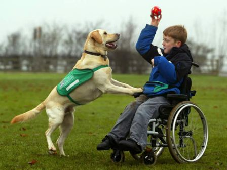
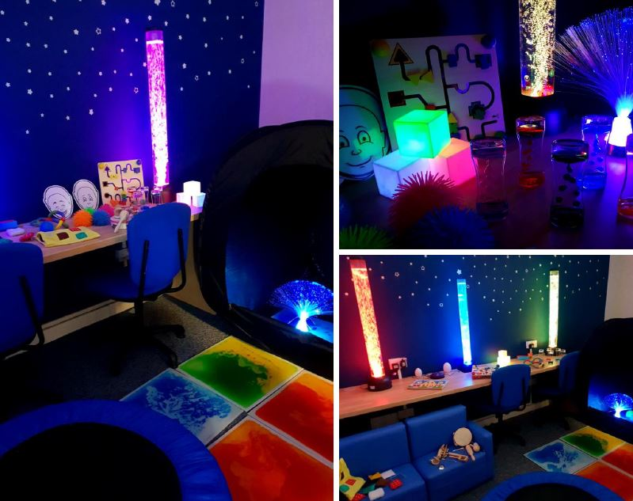

Terapia îl ajută pe copil să devină conștient de gândurile și sentimentele sale, îl ajută pe copil să evalueze dacă sentimentele sau gândurile pot fi distorsionate sau ilogice și apoi îl ajută pe copil prin procesul de schimbare a gândurilor, precum și a reacțiilor emoționale și a comportamentelor care vin odată cu ele.
Există mai multe tipuri de terapie, primul pas este să indentifici ce fel de terapie are nevoie copilul tău, un doctor terapeut este în măsură să te ajute în stabilirea unui plan pentru tine și copilul tău.
Muzica s-a dovedit deosebit de eficientă pentru scoaterea din izolare a persoanelor cu probleme de comunicare. La copiii care suferă de autism, de exemplu, s-a constatat că stimulii sonori diminuează anxietatea legată de realitatea exterioară, ameliorează comportamentul socio-afectiv și crește încrederea în sine.
Asigură-te că ai mereu acces la un playlist cu muzică pentru relaxare, asta îl ajută forte mult pe copilul tău să se calmeze în situațiile dificile.
Toți știm cât de relaxant este desenatul/pictatul, pentru un copil cu nevoi speciale, culorile îl pot calma și îl pot ajuta să se experime. Așa cum am menționat mai sus este important să știi ce terapie este benefică pentru copilul tău. Pe cât de mult bine pot face culorile, pe atât de mult pot provoca discomfort și agitație.
În experiența mea am întâlnit copii care erau agitați în momentul când vedeau o anumită culoare, nu e panică, nu ai de unde să știi până nu încerci.
Nu încerca să faci un Picasso din copilul tău, nu te supăra dacă nu poate să deseneze o floare, nu te supăra că a murdărit masa sau covorul preferat, creeaza un loc doar pentru el, pictează/desenează alături de el și încurajează-l mereu, chiar dacă desenul nu este de expoziție, este desenul copilului tău, fii mândru/ă.
Fizioterapia este un punct important în viața unui copil cu dizabilități, mai ales dăcă majoritatea timpului este petrecut în scaun cu rotile.
Poți să aplezi la centre specializate în fizioterapie/recuperare medicală. Totuși, dacă nu îți permiți costul unei clinici specializate, poți învăța să execuți exerciții ușoare din video tutoriale.
Cele mai "utilizate" animale pentru terapie sunt câinii și caii, în România această terapie nu este așa dezvoltată precum Marea Britanie de exemplu. Există totuși câteva centre/asociații care se ocupă cu această terapie.
Terapia cu animale este benefică pentru copiii cu nevoi speciale, îi ajută să își îmbunătățească starea de spirit, să câștige puterea și încrderea în sine. Învață să fie empatic și să fie grijuliu, reduce frica și anxietatea, ajută la promovarea schimbărilor pozitive în comportamentul copilului.
Aceasă terapie ajută destul de mult copii care au autism, lumina îi ajuta să se calmeze, să aibă un somn liniștit. Dacă ai posibilitatea poți creea o cameră senzorială, decorată cu lumini senzoriale de culoare albastră, verde, roz deschis, galben.
Ce este TacPac?
Communication through touch and music (Comunicare prin atingere și muzică), terapie provenită din Marea Britanie menită să promoveze comunicarea semnificativă între doi oameni prin atingere și muzică.
Prin TacPac, copilul își dezvoltă simțurile, interacționează cu tine și este capabil să comunice ce îi place și ce nu îi place ca raspuns la diferiți stimuli.
Vă las aici pagina oficială de TacPac. 🙂